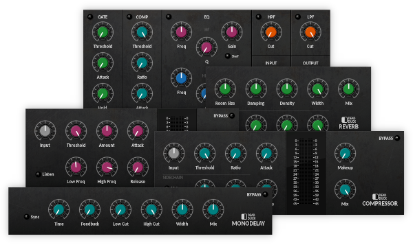

Navigation
next
previous
|
Dead Duck Software
»
Free Effects
Free Effects
¶

Contents
¶
Overview
Installation
Controls
Bypass
Metering
System Menu
Global Settings
System Directory
Filters
Filter
AutoFilter
DualFilter
Equalisers
Equaliser
DJEQ
TiltEQ
Dynamics
Compressor
Limiter
Gate
Expander
DeEsser
Channel Strips
Channel
Channel2
Delay and Reverb
Delay
MonoDelay
Reverb
Modulation
Chorus
Flanger
Phaser
Tremolo
AutoPan
RingMod
Distortion
BitCrusher
Overdrive
Utilities
SigGen
Utility
Table of Contents
Reducktion
Deducktion
Free Effects
Contents
Overview
Filters
Equalisers
Dynamics
Channel Strips
Delay and Reverb
Modulation
Distortion
Utilities
Classic Instruments
Navigation
next
previous
|
Dead Duck Software
»
Free Effects